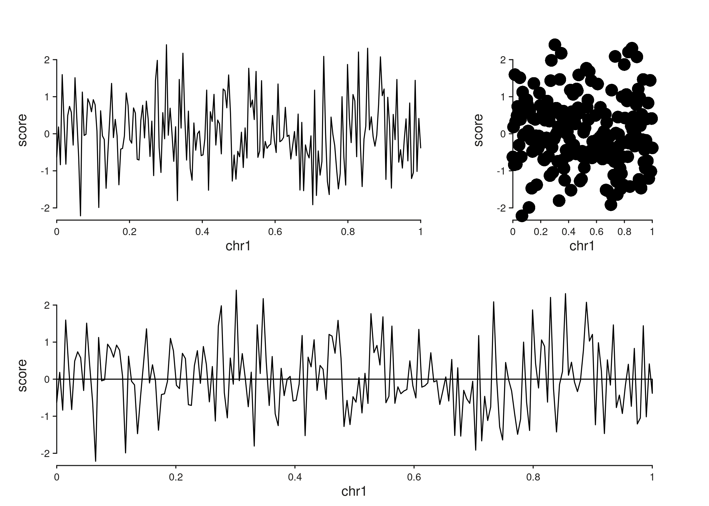
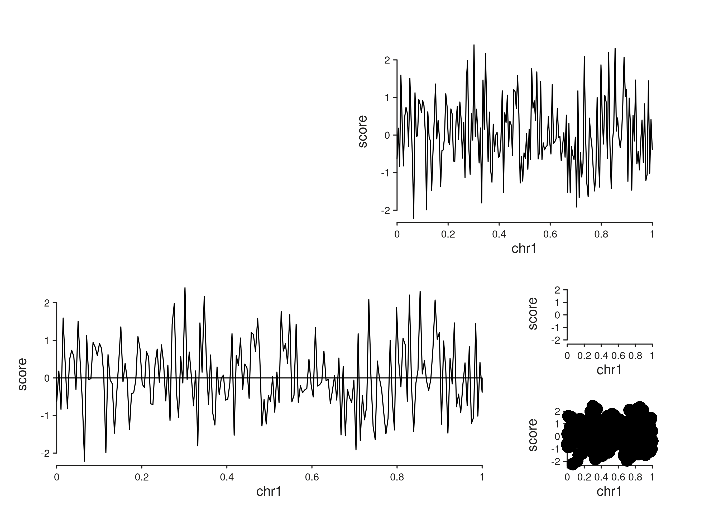
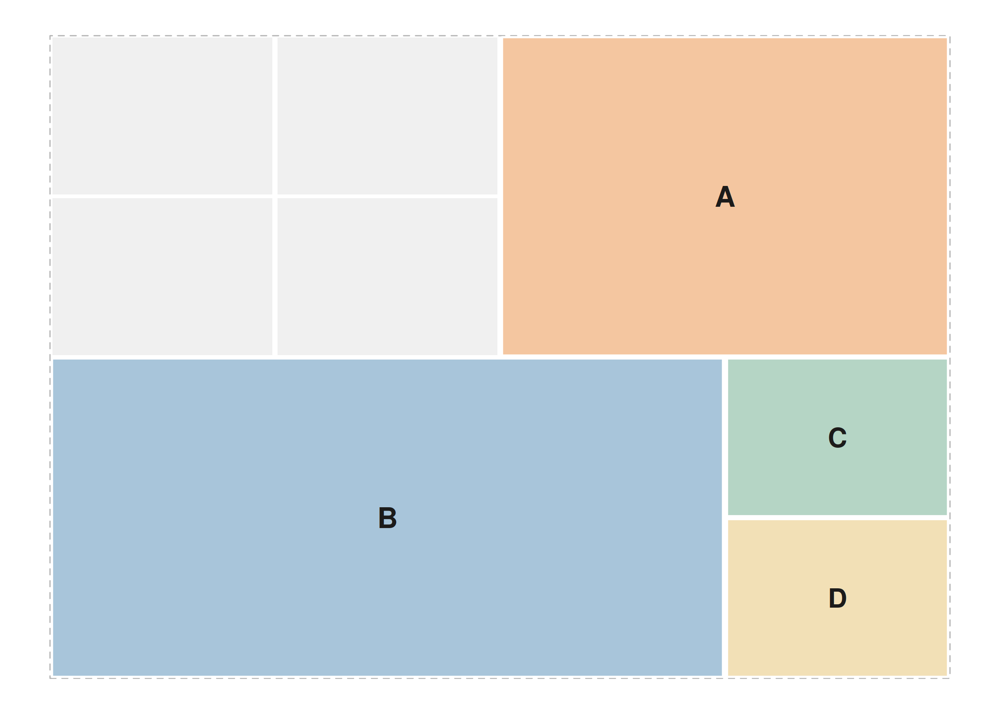
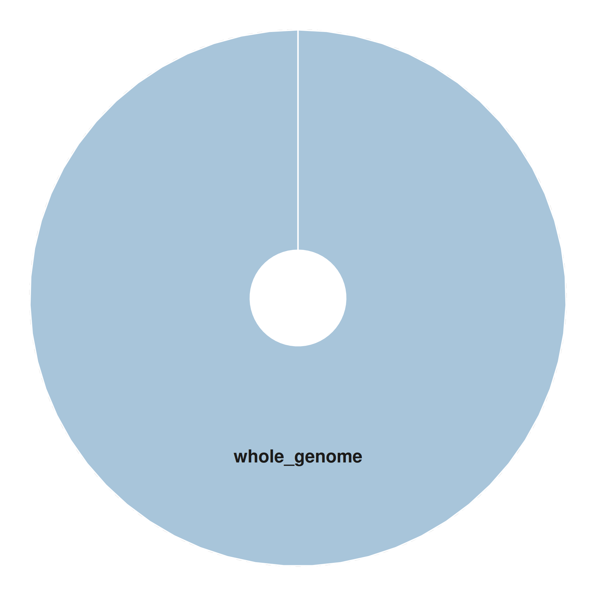
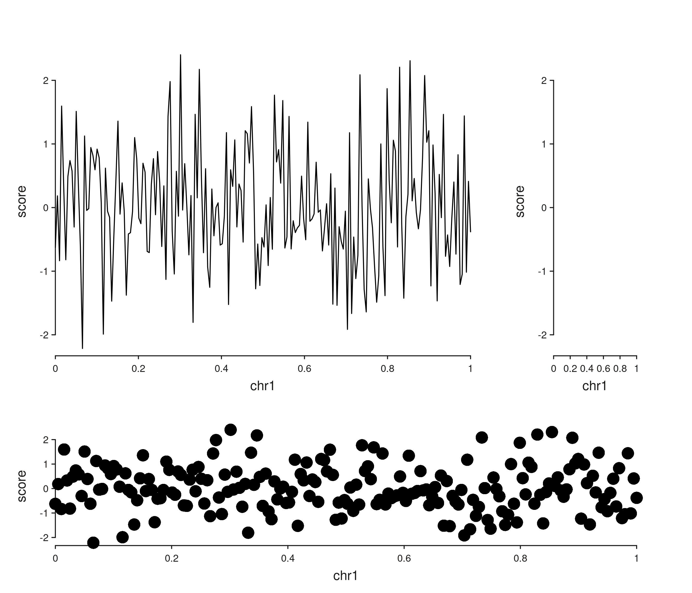

SeqPlotR supports two layout modes:
-
Positional — tracks flow using
direction = "right"or"under"(aliased by the%|%and%__%operators). -
Patchwork — a multiline string assigns each track
to a named rectangular region. This is inspired by the
patchworklayout string.
library(SeqPlotR)
#>
#> Attaching package: 'SeqPlotR'
#> The following object is masked from 'package:base':
#>
#> %||%
library(GenomicRanges)
#> Loading required package: stats4
#> Loading required package: BiocGenerics
#> Loading required package: generics
#>
#> Attaching package: 'generics'
#> The following objects are masked from 'package:base':
#>
#> as.difftime, as.factor, as.ordered, intersect, is.element, setdiff,
#> setequal, union
#>
#> Attaching package: 'BiocGenerics'
#> The following objects are masked from 'package:stats':
#>
#> IQR, mad, sd, var, xtabs
#> The following objects are masked from 'package:base':
#>
#> anyDuplicated, aperm, append, as.data.frame, basename, cbind,
#> colnames, dirname, do.call, duplicated, eval, evalq, Filter, Find,
#> get, grep, grepl, is.unsorted, lapply, Map, mapply, match, mget,
#> order, paste, pmax, pmax.int, pmin, pmin.int, Position, rank,
#> rbind, Reduce, rownames, sapply, saveRDS, table, tapply, unique,
#> unsplit, which.max, which.min
#> Loading required package: S4Vectors
#>
#> Attaching package: 'S4Vectors'
#> The following object is masked from 'package:utils':
#>
#> findMatches
#> The following objects are masked from 'package:base':
#>
#> expand.grid, I, unname
#> Loading required package: IRanges
#> Loading required package: Seqinfo
win <- GRanges("chr1", IRanges(1, 1e6))Positional layout via track widths and heights
gr <- GRanges("chr1", IRanges(seq(1, 1e6, length.out = 200), width = 1),
score = rnorm(200))
p <- seq_plot() %+%
seq_track(data = gr, mapping = map(x = start, y = score),
windows = win, track_id = "A", track_width = 2) %+% seq_line() %|%
seq_track(data = gr, mapping = map(x = start, y = score),
windows = win, track_id = "B") %+% seq_point() %__%
seq_track(data = gr, mapping = map(x = start, y = score),
windows = win, track_id = "C") %+% seq_area()
p$plot()
track_width and track_height are
relative within the row and column respectively: track
A above is twice as wide as B.
Patchwork layout string
Passing a layout string to seq_plot() makes every cell
position explicit. Each unique letter is a region; # cells
stay blank.
layout <- "
##AA
##AA
BBBC
BBBD
"
p <- seq_plot(layout = layout) %+%
seq_track(data = gr, mapping = map(x = start, y = score),
windows = win, track_id = "A") %+% seq_line() %+%
seq_track(data = gr, mapping = map(x = start, y = score),
windows = win, track_id = "B") %+% seq_area() %+%
seq_track(data = gr, mapping = map(x = start, y = score),
windows = win, track_id = "C") %+% seq_bar() %+%
seq_track(data = gr, mapping = map(x = start, y = score),
windows = win, track_id = "D") %+% seq_point()
p$plot()
With a layout string, each track’s direction is ignored
— placement is decided entirely by the track_id matching
the letters.
Previewing a layout before adding data
seq_preview_layout() is the fastest way to validate a
layout string:
seq_preview_layout(layout = layout)
You can also preview a positional plot built from the operator chain:
seq_preview_layout(plot_obj = p)
Circular preview
seq_preview_circos() draws a minimal circular layout,
useful as a schematic for whole-genome plots. It extracts the track
structure from a positional seq_plot (patchwork layouts are
not supported):
gw <- default_genome_windows()
circ <- seq_plot() %+%
seq_track(windows = gw, track_id = "whole_genome") %+% seq_line()
seq_preview_circos(plot_obj = circ)
Relative widths and heights revisited
Both positional and patchwork layouts respect
track_width and track_height within a
cell; the outer cell bounds come from the layout string.
layout <- "
AAAB
AAAB
CCCC
"
p <- seq_plot(layout = layout) %+%
seq_track(data = gr, mapping = map(x = start, y = score),
windows = win, track_id = "A", track_height = 2) %+% seq_line() %+%
seq_track(data = gr, mapping = map(x = start, y = score),
windows = win, track_id = "B") %+% seq_bar() %+%
seq_track(data = gr, mapping = map(x = start, y = score),
windows = win, track_id = "C") %+% seq_point()
p$plot()